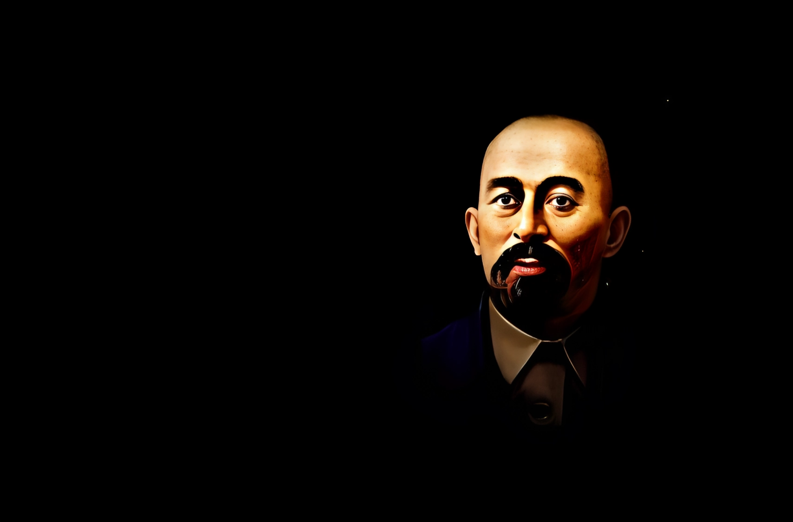
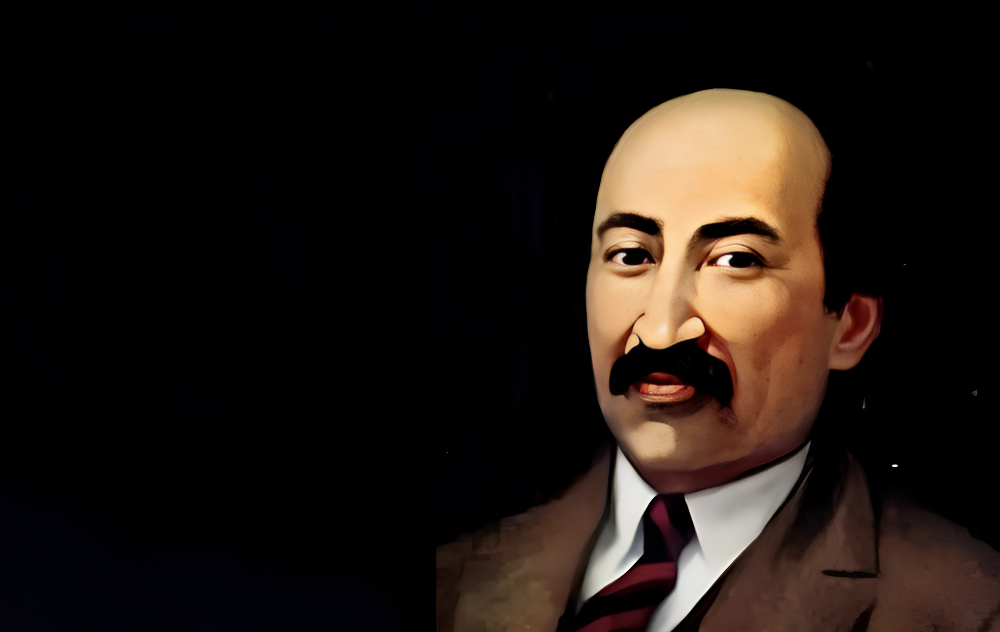
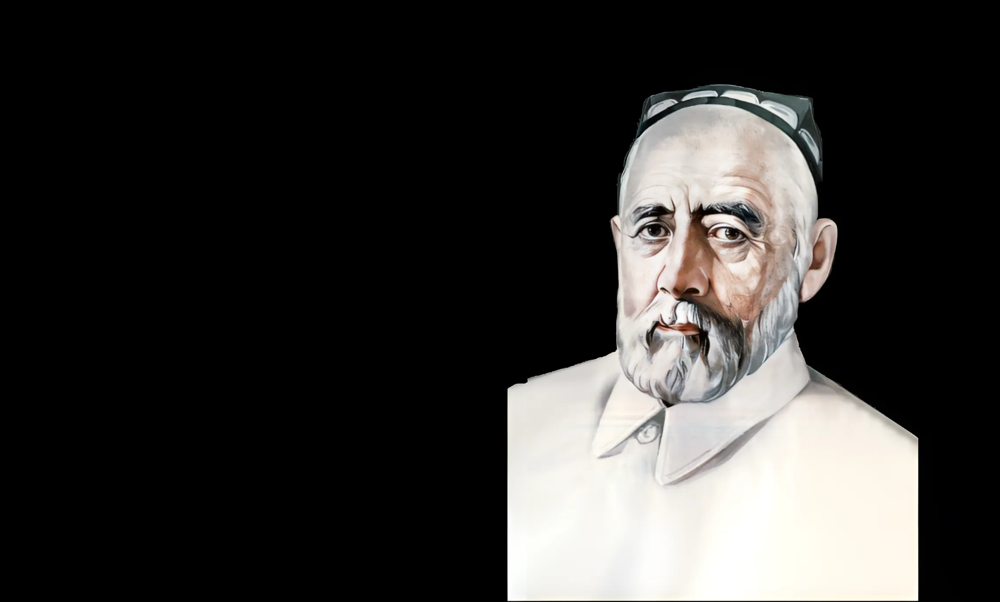
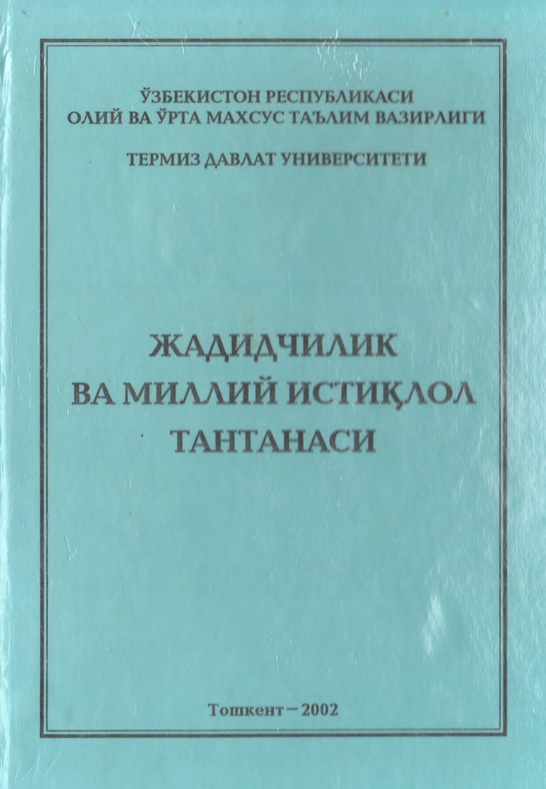

Abdulla Qodiriy: «O'tkan kunlar» (To'liq audiokitob)
O'zbekiston xalq artisti Afzal Rafiqov ijrosida yozib olingan professional audiokitob. Har bir bob alohida musiqiy bezaklar bilan ta'minlangan.

«Jadidlar qanday fikrlagan?» (1-qism: Samarqand ma'rifati)
Tarix fanlari doktori, professor bilan intervyu. Behbudiy kutubxonasining ochilishi, teatr truppalari va jamiyatning dastlabki munosabati tahlil qilinadi.

Abdulhamid Cho'lpon: Sara she'rlar va g'azallar
Cho'lponning «Buzilgan o'lkaga», «Go'zal», «Kishan» kabi istiqlolparvar she'rlarining taniqli suxandonlar tomonidan o'qilgan audio to'plami.

Audio'Munozara' asari radiospektakli
Fitratning jahonga mashhur 'Hindistonda bir farangi ila buxoroli mudarris munozarasi' asarining audio talqini.
Eshiting 🎧 Audio
Audio
Cho'lpon she'rlari audio antologiyasi
'Go'zal', 'Binafsha', 'Ko'ngil', 'Buzilgan o'lkaga' va boshqa saralangan she'rlar jamlanmasi.
Eshiting 🎧 Audio
Audio
Avloniy: 'Turkiy Guliston yoxud Axloq' suhbatlari
Axloqiy qadriyatlar, tarbiya usullari va insoniylik mezonlari haqidagi ibratli mulohazalar.
Eshiting 🎧